结构单元
引言
岩土力学分析与设计的重要方面，是利用结构支护稳定土体或岩体。支护指用于限制洞室紧邻区域位移的工程材料。本节重点讨论对土体或岩体提供加固的支护，介绍 3DEC 专用支护单元。3DEC 以及 FLAC3D 和 PFC 也可使用其他支护类型，详见文档程序指南（Program Guide） \(\rightarrow\) 结构单元（Structural Elements）部分的以下各节。
- 梁结构单元（Beam Structural Elements）
- 锚索结构单元（Cable Structural Elements）
- 桩结构单元（Pile Structural Elements）
- 壳结构单元（Shell Structural Elements）
- 土工格栅结构单元（Geogrid Structural Elements）
- 衬砌结构单元（Liner Structural Elements）
下面分别介绍 3DEC 专用加固类型。所有情况下，定义结构所需命令都很简单，但会调用功能强大且灵活的结构计算逻辑。该逻辑采用与程序其余部分相同的有限差分算法，而非矩阵求解方法，使结构能够适应大位移，并用于动力和静力分析。参阅“动力分析（Dynamic Analysis）”中介绍的动力分析选项。
岩石加固
有多种加固类型，旨在不同地层条件下有效工作。一类是完全包裹于高强度、高刚度树脂或浆体中的钢筋或锚杆。其特点是：在杆身较短长度内即可产生较大抗拉伸轴向阻力；穿过滑移节理的单元还可产生较高抗剪阻力。第二类以水泥浆锚索或筋材为代表，对节理剪切的抵抗很小，而发展全部轴向荷载可能需要沿加固单元较长范围发生浆体变形。这两类分别称为局部加固和整体或空间广布加固。3DEC 已包含这两种岩石加固系统的特征行为。
节理处局部加固（sel reinforcement 命令）
局部加固公式仅考虑加固单元穿越已有不连续面处的局部作用。该公式来自具有单个不连续面的优质岩石中，全长灌浆、未张拉加固单元的室内试验观察；这些观察表明，加固单元应变集中在跨不连续面处（Bjurstrom 1974；Pells 1974）。计算每个单元因所穿越不连续面两侧位移而产生的力，即可在计算模型中实现该行为。以下公式说明引自 Lorig（1985）。
该公式采用简单力—位移关系，描述跨不连续面加固单元的剪切和轴向行为。通过考虑不连续面附近加固单元局部产生的简单几何变化，处理较大剪切位移。局部加固模型既可用于刚性块体，也可用于可变形块体，但最适合单个岩石块体变形相对于加固系统变形可忽略的情况。此时，可合理地将注意力集中于不连续面附近的加固作用。
轴向行为
过去，岩石加固单元的轴向试验主要采用拉拔试验，原因有二：
- 试验和结果解释方便；以及
- 提供轴向约束，这是主流概念模型中加固的主要功能。
因此，对轴向力—位移关系已形成较好的认识。通常用于表示岩石加固的轴向力—位移关系见图 1（Figure 1）。
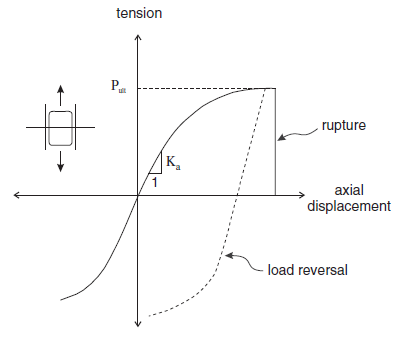
图 1：局部加固系统的轴向行为。
图 1（Figure 1） 表示受拉和受压时响应相同，但并非所有加固系统都如此。
若无拉拔试验结果，可采用 Gerdeen 等（1977）的以下理论表达式，估计全长黏结实心加固单元的轴向刚度 \(K_a\)：
其中：
\(d\)1 = 加固单元直径；
\(k\) = \([{{1} \over {2}}\ G_g\ E_b\ /\ (d_2\ /\ d_1 - 1)]^{1/2}\)
\(G_g\) = 浆体剪切模量；
\(E_b\) = 加固材料杨氏模量；以及
\(d\)2 = 钻孔直径。
与有限元分析的比较（Gerdeen 等 1977）表明，式 (1) 往往略微高估轴向刚度。
加固单元极限轴向承载力取决于多个因素，包括单元强度、黏结强度、孔壁粗糙度、浆体强度、岩石强度和钻孔直径。缺少实际试验结果时，可用经验关系估计极限锚固强度 \(P_{ult}\)。Littlejohn 和 Bruce（1975）给出了水泥灌浆加固设计的一种关系：
其中：
\(\sigma_c\) = 完整块状岩石的单轴抗压强度，取芯率为 100%，最大取 42 MPa，并假定水泥浆抗压强度不低于 42 MPa；以及
\(L\) = 黏结长度。
剪切行为
认识到加固还会改变不连续面的剪切刚度和强度后，人们开展了加固不连续面的室内剪切试验。试验与理论研究表明，沿不连续面剪切会在加固单元中引起弯曲应力，并随从剪切面深入岩石的距离快速衰减。通常，在一至两个加固单元直径的距离内，弯曲应力就已很小。
通常用于表示剪切行为的剪切力—位移关系见图 2（Figure 2）。图中显示加固单元相对于所穿越不连续面及剪切方向处于不同产状时的代表性响应。
若无实际试验结果，可采用 Gerdeen 等（1977）的以下表达式估计剪切刚度 \(K_s\)：
其中：
\(\beta\) = \([K\ /\ (4\ E_b\ I)]^{1/4}\);
\(K\) = \(2E_g\ /\ (d_2/d_1 - 1)\);
\(I\) = 加固单元截面惯性矩；以及
\(E_g\) = 浆体杨氏模量。
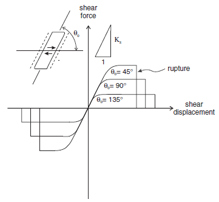
图 2：加固系统的剪切行为。
可通过经验关系估计加固单元在相对于所穿越不连续面及剪切方向的不同方位下，最大剪切力 \(F_{s,b}^{max}\)。例如，Bjurstrom（1974）利用花岗岩中垂直于不连续面的未灌浆加固单元剪切试验结果，建立表达式
其中，\(\sigma_b\) = 加固单元屈服强度。
St. John 和 Van Dillen（1983）评估最大抗剪阻力时，采用了 Azuar 等（1979）的结果。后者发现，对于垂直于不连续面的加固单元，最大剪切力约为其单轴抗拉强度与截面积乘积的一半；顺剪切方向倾斜时，剪切力提高至该乘积的 80% 至 90%。发生断裂的剪切位移，垂直情况约为两个单元直径，倾斜情况约为一个直径。St. John 和 Van Dillen 将断裂前强度和位移量差异解释为加固单元周围岩石破碎程度的影响。
数值公式
3DEC 模型假定，不连续面沿面剪切时，加固单元按图 #the-sel3-cfyt（Figure #the-sel3-cfyt） 所示变形。跨越不连续面、且在剪切位移过程中改变方位的一小段加固单元，称为活动长度。假定的几何变化最早由 Haas（1976）在常规端部锚固单元推导中提出，Fuller 和 Cox（1978）在讨论全长灌浆加固时采用。
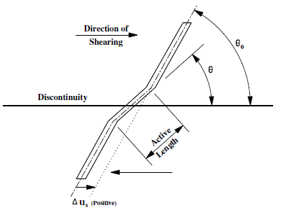
图 3：剪切位移 \(\Delta u_s\) 后假定的加固单元几何形状。
假定活动长度仅因不连续面剪切和法向位移引起的直接几何变化而改变方位。估计活动长度的方法见下一节。模型可视为在不连续接触面处设置两个弹簧，分别平行和垂直于加固轴线，如图 4（Figure 4） 所示。剪切位移发生后，轴向弹簧平行于活动长度，剪切弹簧仍垂直于原始方位，见图 4（Figure 4）。不连续面法向位移也会产生类似几何变化。
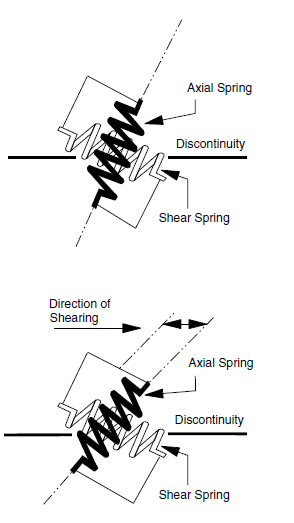
图 4：表示加固单元的剪切与轴向弹簧，在剪切位移前后的方位。
3DEC 表示轴向和剪切行为的力—位移模型，采用以轴向或剪切刚度及极限承载力描述的连续线性算法。注意，3DEC 的局部加固公式，是 UDEC 一般公式的简化版本，见 Itasca（2011）。
描述轴向响应的力—位移关系为
其中：
\(\Delta F_a\) 为轴力增量；
\(\Delta u_a\) 为轴向位移增量；以及
\(K_a\) 为轴向刚度。
该公式未通过降低刚度来考虑不连续面附近浆体和／或岩石压碎。
可为轴力指定断裂极限。如果加固单元轴向拉应变超过指定应变极限，则将轴力设为零。
剪切力—位移关系以增量形式描述为
其中：
\(\Delta F_s\) 为剪切力增量；
\(\Delta u_s\) 为剪切位移增量；以及
\(K_s\) 为剪切刚度。
也可为剪切力指定断裂极限。如果加固单元相对剪应变超过指定应变极限，则将剪切力设为零。
上述力—位移关系用于确定活动长度两端增量位移引起的弹簧力。将所得剪切力和轴力分解为平行和垂直于不连续面的分量，如图 5（Figure 5） 所示，随后将力施加于相邻块体。
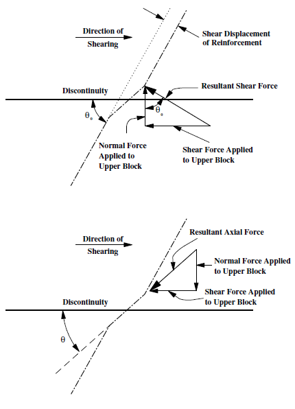
图 5：将加固单元剪切力和轴力分解为平行与垂直于不连续面的分量。
活动长度估计
为定义图 3（Figure 3） 所示局部变形假设，需要估计活动长度。已有研究表明，活动长度在不连续面两侧各延伸约一至两个加固单元直径。没有试验数据时，可用理论分析结果定义活动长度。例如，Gerdeen 等（1977）定义弹性剪切刚度 \(K_s\) 时，还确定了称为荷载传递长度或“衰减长度”的量 l。若 \(\rho_{max}\) 为加固单元挠度与最大挠度之比，则其与荷载传递长度关系可表示为
例如，挠度衰减至最大值 5% 的位置为
或
该方法针对垂直于剪切面的加固单元开发。Dight（1982）给出理论分析，确定剪切面至最大弯矩位置的距离，该位置对应加固单元塑性铰位置。该方法不限制加固单元相对于剪切面的方位。一项重要结果是，塑性铰距剪切面的距离似乎不随剪切位移显著变化，尤其对于典型加固系统，当位移大于 10 mm（0.4 in）时。这与前述几何变化假设一致。
局部加固属性
3DEC 局部加固单元需要以下输入参数：
stiffness-axial：轴向刚度［力／长度］；yield-tension-force：极限轴向承载力［力］；rupture-axial-strain：拉伸破坏应变，默认为无穷大［–］；stiffness-shear：剪切刚度［力／长度］；yield-shear-force：极限抗剪承载力［力］；rupture-shear-strain：剪切破坏应变，默认为无穷大［–］；active-half-length：活动长度的一半［长度］；
轴向刚度和极限轴向承载力，通常按轴向行为（Axial Behavior）所述，通过最佳拟合拉拔试验确定。轴向力—位移关系保持恒定轴向刚度，直到达到极限轴向承载力。
半活动长度值也可根据试验反算，见剪切行为（Shear Behavior）和活动长度估计（Estimation of Active Length）。
局部加固单元相关命令汇总
与局部加固单元相关的全部命令列于表 1（Table 1）。详细说明见命令（Commands）。
sel reinforcement create |
sel reinforcement group |
sel reinforcement history |
sel reinforcement list |
sel reinforcement property |
应用示例——加固边坡
重复教程：快速入门（Tutorial: Quick Start）中的岩质边坡稳定性分析，采用局部加固单元表示岩石锚杆。添加两条水平局部加固线，使边坡稳定。一条从 (30,40,25) 延伸至 (70,40,25)，另一条从 (30,20,25) 延伸至 (70,20,25)。降低节理摩擦后，边坡仍保持稳定，如图 6（Figure 6） 所示。坡面某点的 y 位移时程也显示，加固限制了运动，见图 7（Figure 7）。本例输入命令列于示例 reinforcement.dat。
reinforcement.dat
model new
model large-strain on
model title 'ROCK SLOPE STABILITY --- WEDGE STABLE WITH LOCAL REINFORCEMENT'
block create brick 0,80 -30,80 0,50
block group "rock"
; 边坡两侧的边界块体
block cut joint-set dip 90 dip-direction 180 ori 0,0,0
block cut joint-set dip 90 dip-direction 180 ori 0,50,0
block hide range pos-x 0,80 pos-y -30,0 pos-z 0,50
block hide range pos-x 0,80 pos-y 50,80 pos-z 0,50
block group "slope rock"
; 缓倾裂隙面
block cut joint-set dip 2.45 dip-direction 235 ori 30,0,12.5
block cut joint-set dip 2.45 dip-direction 315 ori 35,0,30
; 大倾角片理面
block cut joint-set dip 76 dip-direction 270 spac 4 num 5 ori 38,0,12.5
block hide range pos-x 30,80 pos-y 0,50 pos-z 0,50
block cut joint-set dip 0 dip-direction 0 ori 0,0,10
block hide range pos-x 0,80 pos-y -30,80 pos-z 0,10
block group "excavation"
block hide off
block hide range group "rock"
block hide range pos-x 0,80 pos-y 0,50 pos-z 0,10
block hide range pos-x 55,80 pos-y 0,50 pos-z 0,50
block hide range pos-x 0,30 pos-y 0,50 pos-z 0,50
; 相交不连续面
block cut joint-set dip 70 dip-direction 200 ori 0,35,0
block cut joint-set dip 60 dip-direction 330 ori 50,15,50
block hide off
; 固定边界块体并初始化重力
block fix range pos-x 0,80 pos-y 0,50 pos-z 0,10
block fix range pos-x 55,80 pos-y 0,50 pos-z 0,50
block fix range group "rock"
block delete range group "excavation"
model gravity 0 0 -10
;
; 指定参数
block property density 2000
block contact generate-subcontacts
; 边界块体与边坡块体之间的摩擦角为 0
block contact property stiffness-normal 1e9 stiffness-shear 1e9 friction 0
; 暂时为边坡块体设置较大摩擦角
block hide range group "rock"
block contact property friction 89
block contact material-table default prop stiffness-normal 1e9 ...
stiffness-shear 1e9 fric 6.0
; 设置潜在楔体的历史
block hide range plane dip 70 dip-dir 200 or 0,35,0 below
block history disp-z position 30 30 30
block hide off
block hide range group "rock"
model solve
model save 'slope'
; 添加局部加固
sel reinforcement create by-line (30 25 40) (70 25 40) property 1
sel reinforcement create by-line (30 25 20) (70 25 20) property 1
sel reinforcement property 1 stiffness-axial 1e8 ...
active-half-length 1.0 yield-tension-force 1e8
block contact property friction 6.0 ;range group-int "slope rock" "slope rock"
history purge
block gridpoint initialize displacement 0 0 0
model cycle 5000
model save 'slope_st'
program return

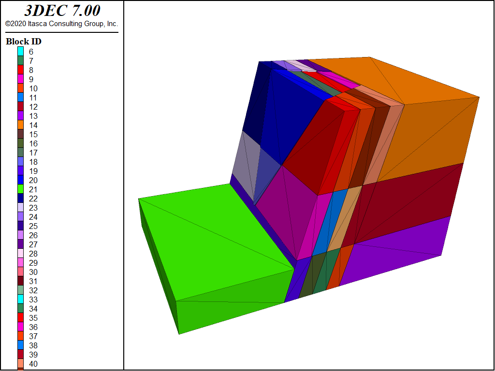
图 6：通过加固稳定边坡。

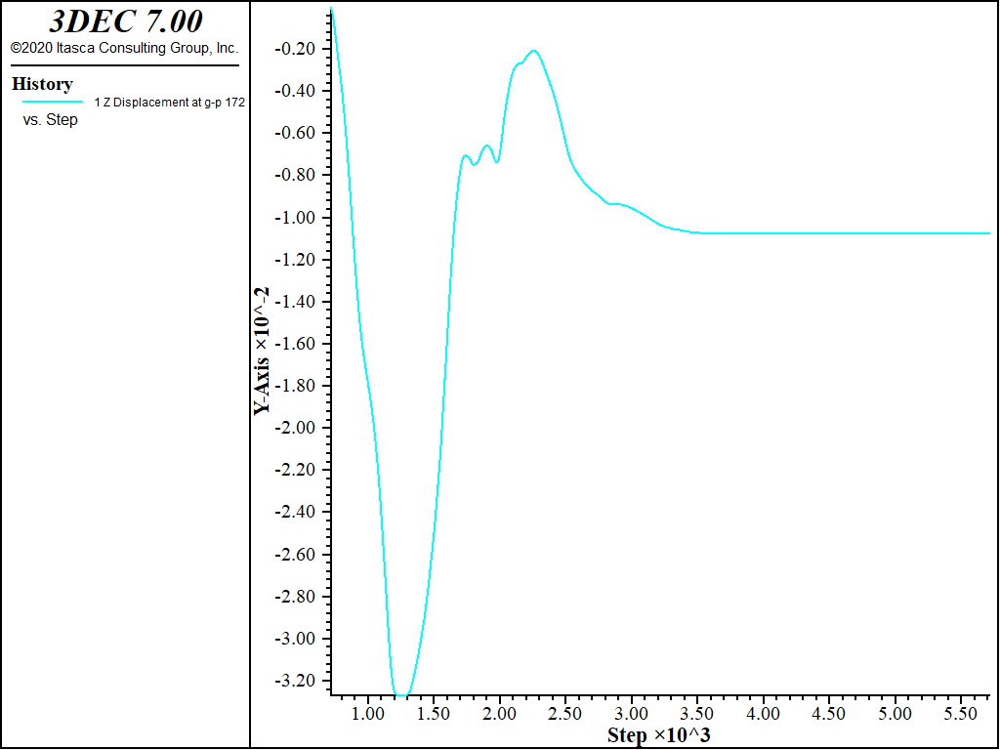
图 7：坡面 (30, 30, 30) 处的 z 位移时程。
混合锚杆（sel hybrid 命令）
评估岩石加固提供的支护时，往往不仅要考虑其跨不连续面处的局部约束，还需考虑对完整岩石的约束；这些岩石可能在开挖周围破坏区域内发生非弹性变形。模拟破坏岩石的非弹性变形和／或锚索等加固系统时，会出现这种情况，其中黏结介质即浆体可能沿部分加固长度发生剪切破坏。
3DEC 锚索单元（锚索结构单元（Cable Structural Elements））允许模拟沿其长度分布的抗剪阻力，该阻力来自浆体与锚索或宿主介质之间的黏结抗剪作用。假定锚索分为若干长度为 \(L\) 的线段，各段端部设置节点。每段质量集中到节点，如图 8（Figure 8） 所示。通过结构节点与其所在块体网格单元之间的弹簧／滑块连接表示抗剪阻力。
使用锚索逻辑必须指定可变形块体，而且必须在安装锚索单元之前，使块体成为可变形体。每个结构节点关联一个有限体积网格单元，用于计算锚索与网格单元之间的剪切力。
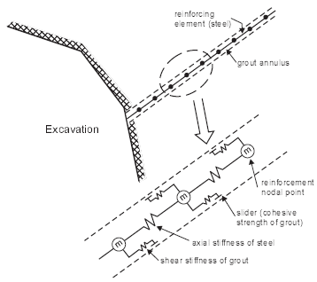
图 8：考虑环状浆体剪切行为的全长黏结加固单元概念力学表示。
锚索行为的完整说明见锚索结构单元（Cable Structural Elements）。
基本锚索单元不能抵抗垂直于锚索的剪切。但锚索用于模拟锚杆时，众所周知，跨越节理的锚杆会对节理剪切提供一定阻力。Dight（1982）提出五种产生该效应的机制：
- 岩石锚杆通过销钉作用产生侧向阻力，从而提高抗剪阻力
- 岩石锚杆预应力使法向应力增加
- 节理剪胀使岩石锚杆产生轴力，从而增加法向应力
- 侧向伸长使岩石锚杆产生轴力，从而增加法向应力
- 岩石锚杆轴力沿节理方向的分量提高抗剪阻力
3DEC 锚索能够表现效应 2 至 5，但不能表现效应 1。销钉作用实际上是一组复杂力学效应的统称，包括钢锚杆弯曲、浆体压碎、周围岩石压碎等，见图 9（Figure 9）。3DEC 不尝试再现全部这些效应，而是以剪切弹簧简单模拟销钉作用，抵抗锚杆穿越断层处的滑移。因此，混合锚杆是锚索单元与加固单元的组合。
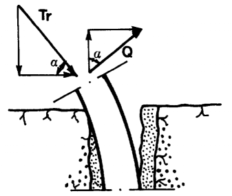
图 9：采用销钉加固的岩石节理抗力机制（引自 Ferrero，1995）。
锚索部分的公式与锚索结构单元（Cable Structural Elements）完全相同。销钉公式几乎与局部加固（局部加固（Local Reinforcement））相同，但需注意以下区别：
- 销钉弹簧没有轴向分量，因为假定锚索本身提供轴向力。
- 无论锚索相对于节理处于何种方位，剪切弹簧始终平行于节理，以避免产生虚假轴向力分量。
- 销钉断裂，即剪应变超过极限时，所属锚索也在同一位置断裂
- 抗剪强度可依赖方位，见下文
销钉剪切力—位移关系由式 (6) 以增量形式描述。可为剪切力指定屈服强度，且该强度可依赖方位，见下文。超过屈服强度后，销钉表现为塑性，随着剪切位移继续增大，抗剪阻力保持恒定。还可指定断裂应变极限。如果加固单元相对剪应变超过指定极限，则将剪切力设为零。如前所述，所属锚索也会断裂，其轴力设为 0。
通过插值到网格单元面节点，将剪切力施加到节理两侧的块体面。销钉公式仅适用于已划分网格的可变形块体。
几何
默认情况下，混合锚杆各段长度恒定。通过 sel hybrid create 命令，用户可用 分段数（segments） 指定分段数，或用 segment-length 指定近似段长。使用 segment-length 时，为保证分段数为整数且各段等长，实际段长可能略有不同。
dowel-length 参数为销钉段长度。该长度仅用于计算剪应变，即剪切位移／dowel-length，不影响计算力或节点布置。见图 10（Figure 10）。
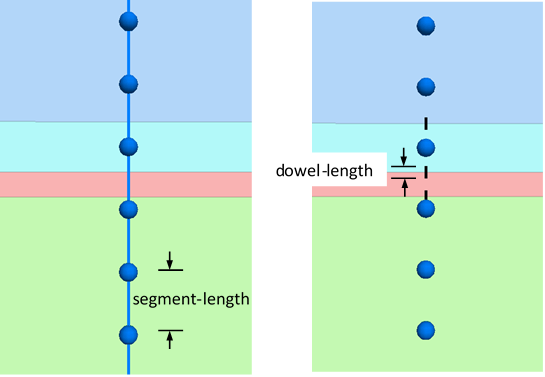
图 10：穿过三条节理的混合锚杆。左图显示锚索分段和节点，右图显示节点和销钉段（黑线）。
断层附近的节点分布会影响锚杆行为。可以创建混合锚杆，同时确保每个块体即每对节理之间至少有一个节点。这通过调用带 spacing variable 关键字的 hybrid create 命令实现。此模式中，segment-length 规定块体内部即节理之间的锚索段长，dowel-length 给出跨越节理的锚杆单元长度。若未给出 dowel-length，则默认为 segment-length。示例见图 11（Figure 11）。如果块体小于 0.1×`dowel-length`，则不在其内部布置节点。如果大于 0.1×`dowel-length`、但小于 2×`dowel-length`，则在块体中间布置单个节点。dowel-length 也是计算剪应变所用的销钉段长度，即剪切位移／dowel-length。警告：使用 spacing variable 时，如果节理间距很小，可能创建出锚索段极短的锚杆。由于很小位移便可产生较大轴向应变，这些短段容易在低应力下断裂。如有此顾虑，应使用默认设置（spacing constant）。
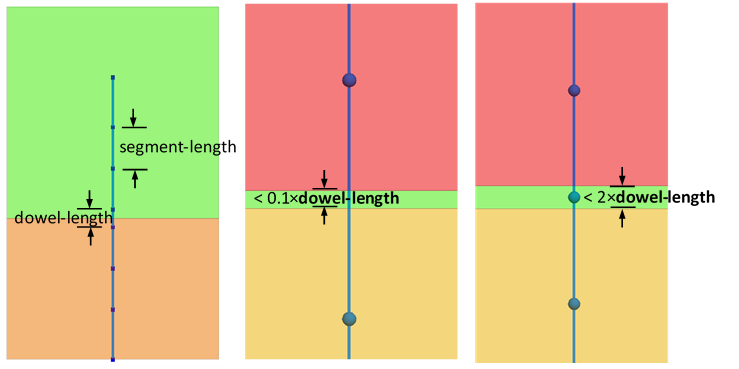
一般而言，标定采用的节点间距应等于实际 3DEC 问题中的间距。特别应使 dowel-length 相对于块体尺寸足够小，以尽量在整个模型中保持恒定。如果指定 segment-length/dowel-length 相对于块体尺寸过大，3DEC 会自动减小它（使用 spacing variable 时），或锚杆可能遗漏某些密集节理的影响（使用 spacing constant 时），导致标定行为与大型模型中的锚杆行为显著不同。
混合锚杆属性
混合锚杆的锚索部分具有 11 项属性。参数选择建议见锚索属性部分（锚索属性（Cable Properties））：
- density，质量密度 \(ρ\)，可选，启用动力模式或重力时需要［M/L3］
- young，杨氏模量 \(E\)［F/L2］
- grout-cohesion，单位长度上的注浆黏结强度（力），\(c_g\) [F/L]
- grout-friction，浆体摩擦角，\(ϕ_g\) [度]
- grout-stiffness，单位长度浆体刚度 \(k_g\)［F/L2］
- perimeter，浆体外露周长，\(p_g\) [L]
- thermal-expansion，热膨胀系数，\(α_t\) [1/T]（可选，用于热分析）
- cross-sectional-area，截面积 \(A\)［L2］
- yield-compression，抗压屈服强度（力），\(F_c\) [F]
- yield-tension，抗拉屈服强度（力），\(F_t\) [F]
- rupture-tension-strain，拉伸应变极限，[-]
混合锚杆还有三项与销钉段有关的附加属性：
- dowel-stiffness，杆体的剪切刚度，[F/L]
- dowel-yield，杆体剪力屈服极限，[F]
- dowel-strainlimit，销钉剪切应变极限，[-]
这些属性通常通过室内剪切试验标定选取。3DEC 发行版将包含一个易用的标定工具，即将推出。
标定
分段长度与销钉长度的影响
对于一组固定参数，改变节点间距主要影响轴向和剪切断裂位移，可通过改变轴向和剪切临界应变重新调整；同时也会影响锚杆刚度。对于给定节理剪切位移或轴向张开量，节点间距越小，锚杆反应越刚硬，因为前述机制（4）增强，即侧向伸长导致岩石锚杆轴力增加，进而提高法向应力。可相应调整剪切和轴向刚度，但标定存在限制：段长越小，轴向刚度对锚杆剪切响应的影响越大。对于给定节理剪切位移，节点间距越小，轴向应变相对于剪应变越大。如果将 segment-length 固定为 dowel-length，这是标定无法消除的几何效应。总体而言，必须认识到，锚杆微观轴向行为会强烈影响宏观剪切行为。
标定步骤
混合锚杆模型属性通常通过垂直于节理锚杆的简单剪切和拉拔试验标定，见下例。表 2（Table 2） 列出标定前应定义、且模拟期间必须保持恒定以保证标定有效的参数。
| 3DEC 参数 | 说明 | 取决于 |
|---|---|---|
cross-sectional-area |
锚索截面积 | 支护设计 |
perimeter |
钻孔周长。仅当 grout-friction > 0 时需要 |
钻孔直径 |
segment-length |
块体内部混合锚杆节点间距 | 模型几何，尤其是用于模拟岩体的块体几何。segment-length 应足够小，使多数块体中至少有一至两个节点 |
dowel-length |
混合锚杆的销钉段长度。默认 = segment-length。采用 spacing variable 时，也根据该值计算最小混合锚杆段长，即 dowel-length/10 |
与 segment-length 相同 |
grout-friction |
可选参数。浆体材料摩擦角［度］ | 浆体属性 |
图 12（Figure 12） 显示典型简单剪切试验结果及相应阶段。简单剪切试验是研究锚杆剪切行为的经典试验，此处用于标定。
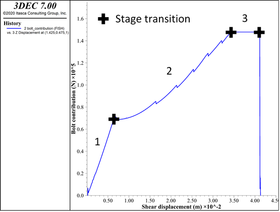
图 12：混合锚杆标定。典型简单剪切试验曲线及相应阶段。
表 3（Table 3） 列出为在简单剪切试验中获得所需混合锚杆行为，应调整的关键参数。
| 阶段 | 主要影响 | 次要影响 |
|---|---|---|
| 弹性阶段（1） | dowel-stiffness |
young grout-stiffness |
| 弹性阶段结束 | dowel-yield |
|
| 屈服阶段（2） | grout-stiffness |
young |
| 屈服阶段结束／塑性阶段（3） | grout-cohesion |
yield-tension |
| 塑性阶段结束 | dowel-strainlimit |
图 13（Figure 13） 显示典型简单剪切试验结果及相应阶段。拉拔试验是研究锚杆拉伸行为的经典试验，此处用于标定。
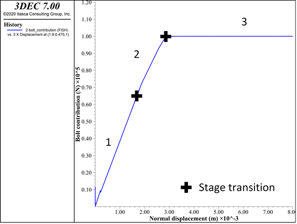
图 13：混合锚杆标定。典型拉拔试验曲线及相应阶段。
表 4（Table 4） 列出为在简单拉拔试验中获得所需混合锚杆行为，应调整的关键参数。
| 阶段 | 主要影响 | 次要影响 |
|---|---|---|
| 弹性阶段（1） | young grout-stiffness |
|
| 弹性阶段结束 | grout-cohesion |
|
| 屈服阶段（2） | grout-cohesion |
young |
| 屈服阶段结束／塑性阶段（3） | yield-tension 或 grout-cohesion |
|
| 塑性阶段结束 | dowel-strainlimit |
标定混合锚杆时，应记住以下几点： begin{itemize} item 确保节点数量足够、锚索长度足够长，不影响标定结果。即锚杆应足够长，能够充分发挥承载能力，而不是在达到该阶段之前就沿全长滑移。 item 如果锚索应变极限相对于销钉很低，则无论轴向还是剪切断裂，始终由锚索轴向断裂引发。 item 对于给定节理位移，节点间距强烈影响锚杆行为。标定采用的节点间距应等于实际 3DEC 问题中使用的间距。尤其应使销钉长度相对于块体尺寸较小，以尽量在整个模型中保持恒定。如果指定 \(segment-length\)/\(dowel-length\) 相对于块体过大，3DEC 会自动减小它（\(spacing\) = \(variable\) 时），或锚杆可能遗漏某些密集节理的影响（\(spacing\) = \(constant\) 时），导致标定行为与大型模型中的锚杆行为显著不同。 end{itemize}
依赖方位的抗剪强度
现场岩石锚杆可能承受不同方向剪切与轴向作用的组合和／或先后作用。只有少数文献研究跨节理锚杆倾角对其行为的影响。混合锚杆模型并非旨在再现所有可能条件下岩石锚杆行为的全部复杂性，而是以简单方式考虑锚杆在节理交点处产生的抗剪阻力，同时准确再现试验观察到的岩体支护作用。本节讨论给定参数组下，3dec| 简单剪切试验中的倾角效应，并与文献观测比较。 室内试验表明： begin{itemize} item 加锚节理的最大抗剪强度随节理摩擦角增大。 item 对于给定节理摩擦角，加锚节理最大抗剪强度随锚杆倾角变化。 item 倾斜锚杆比垂直锚杆反应更刚硬。 item 锚杆垂直于节理时，极限位移最大。 item 摩擦角很低时，锚杆倾角不影响最大阻力。 item 随倾斜程度增加，约束效应增强，而黏聚项减小。 end{itemize}
图 （Figure）Figure #hybrid-shear_angle 显示摩擦角为 40 度、锚杆倾角从 10 至 130 度变化时的简单剪切试验结果。

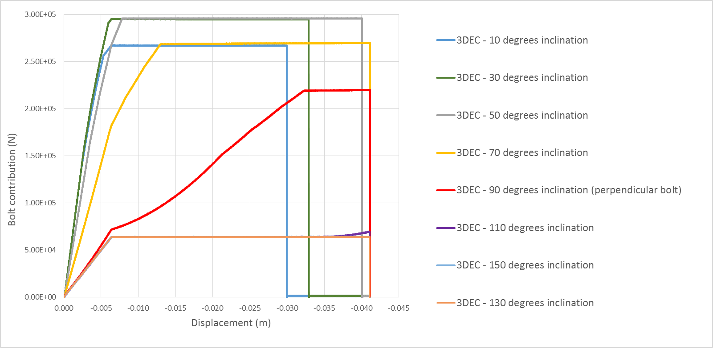
图 14：节理摩擦角为 40 度时，锚杆倾角对简单剪切试验的影响。倾角 > 90 度表示锚杆朝剪切反方向倾斜。
Figure #hybrid-pull_angle 显示两种倾角，即 70 度和 90 度的简单拉拔试验结果。
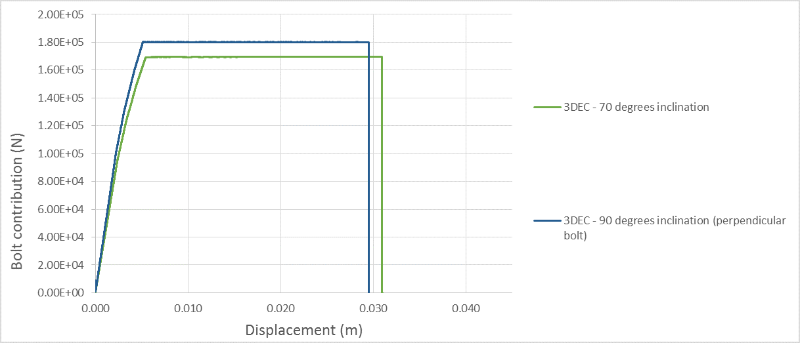
图 15：锚杆倾角对拉拔试验的影响。
与试验观察到的岩石锚杆行为相似，3DEC 混合锚杆表现如下：
begin{itemize}
item 倾斜锚杆比垂直锚杆反应更刚硬。这是几何效应：相对于节理法线，锚杆越倾斜，给定剪切位移增量产生的锚索轴力增量越大。
item 锚杆从垂直方向转开时，约束即摩擦效应增强，而黏聚项，即销钉作用和锚索剪切作用减小。
item 导致锚杆破坏的极限剪切位移随倾角变化。锚杆垂直于节理时，极限剪切位移最大，此时直接取决于输入的销钉剪切断裂应变，即最大剪切位移 = 最大销钉应变 × 销钉长度。锚杆更加倾斜时（图 （Figure）Figure #hybrid-shear_angle 中 \(\theta\) > 70 度），由于锚索单元伸长更快，锚索轴向断裂应变极限会先于销钉应变极限达到。锚杆越倾斜，锚索达到轴向应变极限所需的节理剪切位移越小。
end{itemize}
注意，断裂控制从销钉剪切极限转为锚索轴向极限时的倾角，取决于输入值。如果锚索应变极限相对于销钉很低，断裂始终由锚索轴向断裂引起。如果锚索应变极限为无穷大，则无论方位如何，始终由销钉剪应变极限控制。
还对朝剪切反方向倾斜的锚杆开展剪切试验，即图 （Figure）Figure #hybrid-shear_angle 中倾角 > 90°。这些情况下，节理剪切使锚索单元受压而非伸长，因此锚杆作用于节理的唯一力来自销钉单元。弹性阶段结束、销钉达到屈服值后，力不再增加，除非锚索单元转动足够大、再次被拉伸；\(theta\) = 110° 的试验末期就是这种情况。
图 （Figure）Figure #hybrid-pull_angle 给出垂直于节理及略倾斜锚杆（\(theta\) = 70°）的拉拔试验结果。锚杆倾斜时，拉动块体产生的给定位移增量，比垂直锚杆引起的伸长量更小，因此刚度略低。同一几何效应也使倾斜锚杆的最大轴向位移约 31 mm，高于垂直锚杆的约 29 mm。锚杆垂直于节理，即平行拉动方向时，最大荷载等于锚索屈服承载力，本例为 18 吨。锚杆倾斜时，最大荷载等于该值在拉动方向的投影。相对于锚杆屈服承载力，倾斜程度越大，最大荷载越低。
针对倾斜锚杆受剪的可用试验结果很少。定性而言，3DEC 混合锚杆再现了文献分析或试验结果中的大多数倾角效应。定量而言，考虑到模型目标精度，我们认为其行为合理，且处于少数可用试验观测的数量级内。
节理摩擦角对锚杆承载力的影响
简单剪切试验中，锚杆作用于节理的三项力贡献为销钉单元抗剪阻力 Fd、锚索抗剪阻力 FcS，以及锚索法向力引起的附加摩擦力 FcN。若锚杆倾角为 \(\theta_1\)，其中 90 度对应垂直于节理，节理摩擦角为 \(\phi\) 度，则理论最大锚杆贡献为：
其中：
\(F_c\) = 锚索单元中的轴力，最大值为输入的锚索屈服值；
\(F_d\) = 销钉单元中的力，最大值为输入的销钉屈服值
第一项表示抗剪阻力 FcS，第二项表示法向分量 FcN。
因此，3DEC 混合锚杆贡献取决于摩擦角和锚杆倾角。考虑简单剪切试验中锚杆会转动几度，图 16（Figure 16） 估计不同倾角和摩擦角下，混合锚杆产生的三项力。与试验观察的岩石锚杆行为类似，3DEC 混合锚杆表现如下： begin{itemize} item 给定节理摩擦角下，加锚节理最大抗剪强度随锚杆倾角变化。摩擦角为 40 度时，最大值出现在约 45 度，比垂直锚杆增加约 30%。 item 加锚节理最大抗剪强度随节理摩擦角变化；摩擦越大，最大抗剪强度越高。 end{itemize}

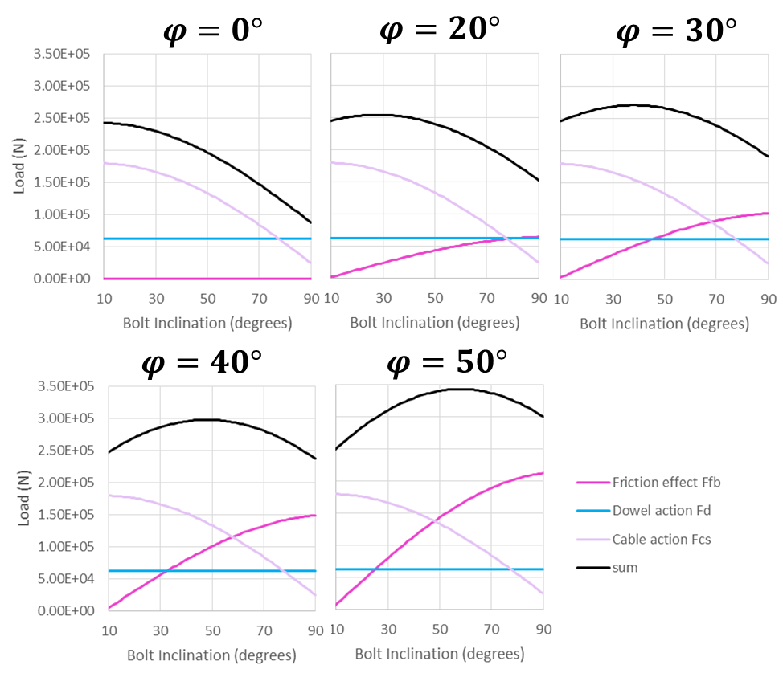
图 16：五种节理摩擦角，即 0、20、30、40 和 50 度下，锚杆作用各分量随倾角的变化。锚杆倾角 90 度对应垂直于节理。
标定工具
本文档提供混合锚杆标定工具（calibration tool），方便依据室内数据选择锚杆属性。工具也包含不同锚杆类型的默认属性，并提供自身文档，见工具中出现的“？”标记。
混合锚杆相关命令汇总
混合锚杆相关的全部命令列于表 5（Table 5），详细说明见命令（Commands）。
sel hybrid change |
sel hybrid create |
sel hybrid delete |
sel hybrid group |
sel hybrid history |
sel hybrid list |
sel hybrid node |
sel hybrid property |
sel hybrid update |
应用示例：简单剪切试验
用两个块体模拟简单剪切试验（图 17（Figure 17））。限制左块体底部的竖直运动，并使右块体顶部以恒速向下移动。一根混合锚杆从左向右跨越节理。施加 1 MPa 法向应力，节理摩擦角设为 40 度，黏聚力为 0。混合锚杆销钉段屈服强度设为 0.063 MN，应变极限为 0.41。图 18（Figure 18） 显示锚杆贡献与剪切位移的关系。锚杆贡献实质上是剪应力减去摩擦强度（\(\sigma_n \tan \phi\)）。约 7 mm 剪切位移时，销钉段屈服；约 3.5 cm 时，锚索自身拉伸屈服；最后，剪切位移约 4.1 cm 后，销钉断裂，锚杆失效。

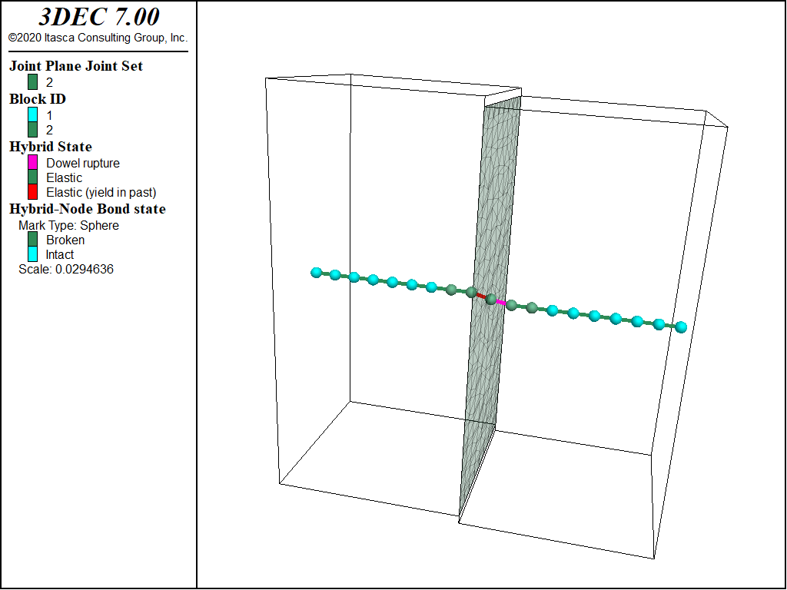
图 17：剪切试验中的块体与锚杆布置。图示为锚杆断裂后模型。

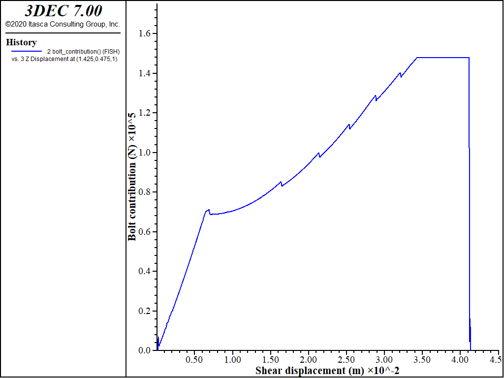
图 18：剪切试验中的锚杆贡献。
blocks.dat
;
;建立用于复合锚杆标定的模型
;
model new
fish automatic-create off
model random 10000
model large-strain on
;
fish define params
; 块体尺寸
global block_lenH = 0.95
global block_lenV = 2.0
global edge_length_=0.125 ; 网格单元尺寸
; 块体参数
global ymod_=40e9
global pratio_=0.25
global dens_=2500
; 节理参数
global jkn_=3e11
global jks_=3e11
global jfric_=40.0
;复合锚杆参数
global area_=201e-6
global e_=1.4e11
global grout_stiff_=3e8
global grout_strength_=2e5
global cable_yield_=100e3
global cable_strain_limit_=0.2 ; 拉伸
global dowel_stiffness_=1.0e7
global dowel_yield_=62.8e3
global dowel_strain_limit_=0.41 ; 剪切
global dowel_length_=0.1
global segment_length_=0.1
; 计算得到的参数
global bolt_len=block_lenH*2.
end
[params]
=====================================================
;
;创建两个块体
block create brick 0 [block_lenH] 0 [block_lenH] 0 [block_lenV]
block create brick [block_lenH] [2*block_lenH] 0 [block_lenH] 0 [block_lenV]
block zone generate edgelength [edge_length_]
; 网格单元和接触参数
block zone cmodel elastic
block zone property young [ymod_] poisson [pratio_] density [dens_]
block contact jmodel assign mohr
block contact property stiffness-normal [jkn_] stiffness-shear [jks_] friction [jfric_]
block contact mat-table default prop stiffness-normal [jkn_] stiffness-shear [jks_] friction [jfric_]
;
; 施加共用边界条件
block hide range position-x 0 [block_lenH] not
block gridpoint apply velocity-z 0 range position-z 0
block hide off
;
block gridpoint apply velocity-y 0 range position-z -1000 1000
; 采用组合阻尼以消除振动。
block mech damp combined
model save 'blocks'
shear_test.dat
;;-------------------------------------------------------------------------------------------
;; 剪切试验
;;-------------------------------------------------------------------------------------------
model rest 'blocks'
; 定义剪切加载参数
fish def params_shear
; 边界条件
global normal_stress = 1.0e6
global zvel_=-1e-2
; 计算值
local normal_force = normal_stress * block_lenH*block_lenV
global friction_force = normal_force*math.tan(jfric_*math.degrad)
end
[params_shear]
; 边界条件
block face apply stress-xx [-1.0*normal_stress] range position-x 0
block face apply stress-xx [-1.*normal_stress] range position-x [block_lenH*2.]
;
block hide range position-x 0 [block_lenH]
block gridpoint group 'top' range pos-z [block_lenV]
block hide off
model solve
;
block gridpoint initialize displacement 0 0 0
block contact reset displacement
;
; 施加剪切荷载
block gridpoint apply velocity-z [zvel_] range group 'top'
;
; 用于计算锚杆抗剪贡献的函数
[global max_force = 0.0]
[global bolt_contribution = 0.0]
;
fish define reaction_force
local temp_ = 0.0
loop foreach local gi block.gp.list
if block.gp.group(gi) = 'top'
temp_ = temp_ - block.gp.force.reaction.z(gi)
end_if
end_loop
reaction_force = temp_
bolt_contribution = temp_ - friction_force
end
;
fish history reaction_force
fish history bolt_contribution
block history displacement-z ...
position [1.5*block_lenH] [0.5*block_lenH] [0.5*block_lenV]
model history mechanical unbalanced-maximum
history interval 1000
;
;运行试验，在断裂时停止
fish def run_it
local test_ = true
local max_force = -1e12
loop while test_ = true
command
model cycle 10000
end_command
if max_force < bolt_contribution
max_force = bolt_contribution
else
if bolt_contribution < max_force/10.
test_ = false
end_if
end_if
end_loop
end
model save 'ini_shear.sav'
=================================================================
; 测试垂直锚杆，角度为 90 度
; 修改 dincl_，以测试其他锚杆角度
;
model restore 'ini_shear'
[global dincl_=90.]
;创建锚杆
[global x1 = block_lenH-0.5*bolt_len*math.sin(dincl_*math.degrad)+0.001]
[global y1 = 0.5*block_lenH]
[global z1 = 0.5*block_lenV+0.5*bolt_len*math.cos(dincl_*math.degrad)]
[global x2 = block_lenH+0.5*bolt_len*math.sin(dincl_*math.degrad)-0.001]
[global y2 = y1]
[global z2 = 0.5*block_lenV-0.5*bolt_len*math.cos(dincl_*math.degrad)]
[global bolt_beg=vector(x1,y1,z1)]
[global bolt_end=vector(x2,y2,z2)]
sel hybrid create by-line [bolt_beg] [bolt_end] property 1 ...
segment-length [segment_length_] dowel-length [dowel_length_]
; 锚索参数
sel hybrid prop 1 cross-sectional-area [area_] young [e_] ...
grout-stiffness [grout_stiff_] grout-cohesion [grout_strength_] ...
yield-tension [cable_yield_] rupture-tension-strain [cable_strain_limit_]
; 销钉参数
sel hybrid prop 1 dowel-stiffness [dowel_stiffness_] ...
dowel-yield [dowel_yield_] dowel-strainlimit [dowel_strain_limit_]
;在两端设置托板
sel hybrid node attach range pos-x [bolt_beg->x]
sel hybrid node attach range pos-x [bolt_end->x]
;运行试验，在断裂时停止
[run_it]
model save 'shear-90'
program return
=================================================================
; 测试 70 度锚杆
;
model restore 'ini_shear'
[global dincl_=70.]
;创建倾斜锚杆
[global x1 = block_lenH-0.5*bolt_len*math.sin(dincl_*math.degrad)+0.001]
[global y1 = 0.5*block_lenH]
[global z1 = 0.5*block_lenV+0.5*bolt_len*math.cos(dincl_*math.degrad)]
[global x2 = block_lenH+0.5*bolt_len*math.sin(dincl_*math.degrad)-0.001]
[global y2 = y1]
[global z2 = 0.5*block_lenV-0.5*bolt_len*math.cos(dincl_*math.degrad)]
[global bolt_beg=vector(x1,y1,z1)]
[global bolt_end=vector(x2,y2,z2)]
sel hybrid create by-line [bolt_beg] [bolt_end] property 1 ...
segment-length [segment_length_] dowel-length [dowel_length_]
; 锚索参数
sel hybrid prop 1 cross-sectional-area [area_] young [e_] ...
grout-stiffness [grout_stiff_] grout-cohesion [grout_strength_] ...
yield-tension [cable_yield_] rupture-tension-strain [cable_strain_limit_]
; 销钉参数
sel hybrid prop 1 dowel-stiffness [dowel_stiffness_] ...
dowel-yield [dowel_yield_] dowel-strainlimit [dowel_strain_limit_]
;在两端设置托板
sel hybrid node attach range pos-x [bolt_beg->x]
sel hybrid node attach range pos-x [bolt_end->x]
;运行试验，在断裂时停止
[run_it]
model save 'shear-70'
应用示例：简单拉拔试验
拉拔试验采用与简单剪切试验相同的块体和锚杆布置。此时不施加法向应力，右块体右边界以恒速向右移动。图 19（Figure 19） 显示试验结束时的块体与锚索布置。图 20（Figure 20） 显示锚杆贡献。由于节理没有抗拉强度，锚杆贡献直接等于右边界施加的拉力。曲线显示初始弹性轴向变形，随后在约 2 mm 位移时开始浆体破坏。最终，拉动 3 mm 后锚索拉伸屈服，此后锚杆表现为塑性，贡献不再增加。

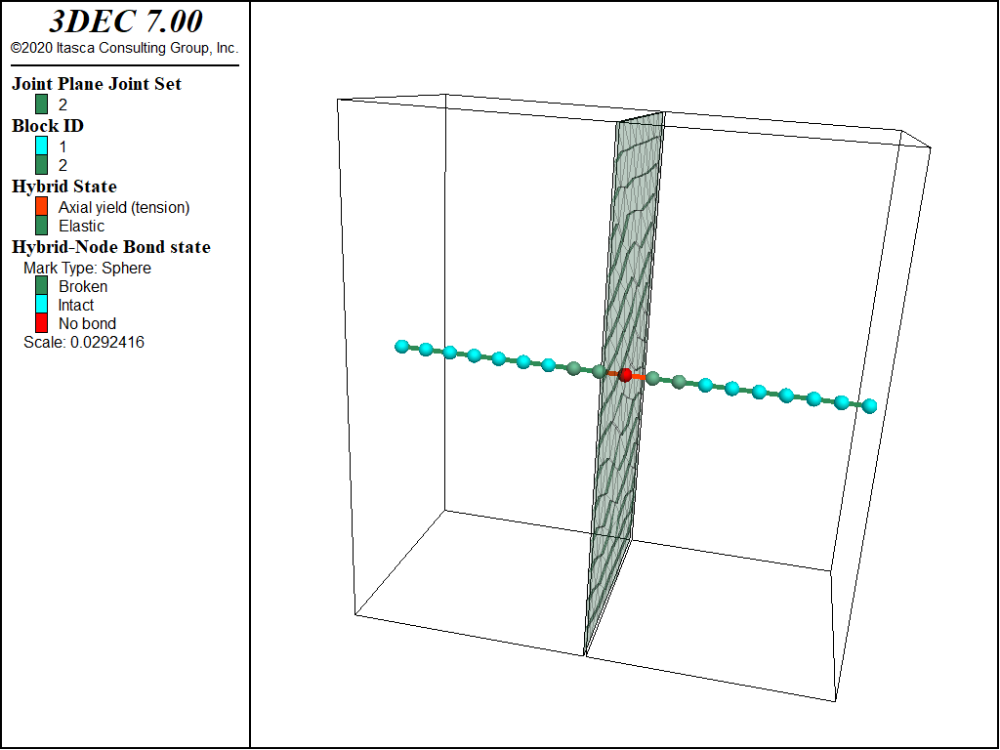
图 19：拉拔试验中的块体与锚杆布置。图示为锚杆拔出后模型。

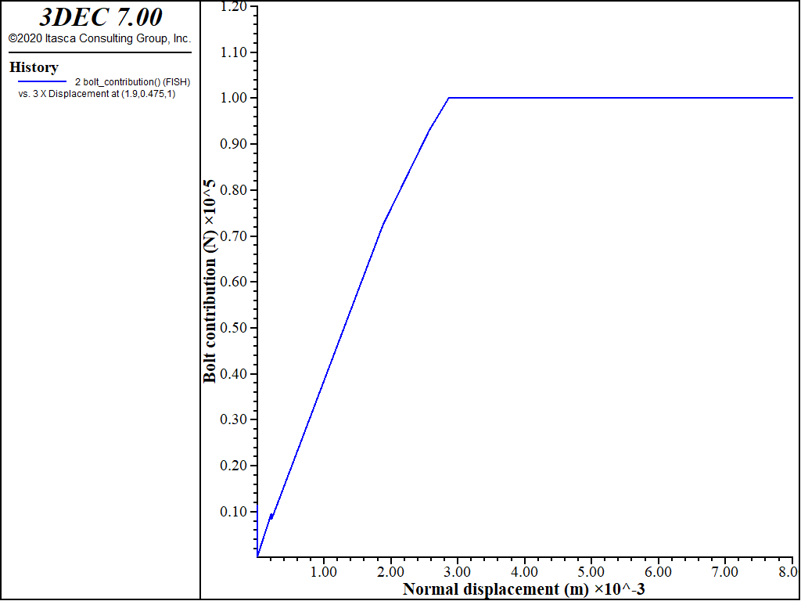
图 20：拉拔试验中的锚杆贡献。
pullout.dat
;;-------------------------------------------------------------------------------------------
;; 拉拔试验
;;-------------------------------------------------------------------------------------------
model restore 'blocks'
;
; 定义拉拔试验参数
[global xvel_ = 1e-3]
;
block gridpoint apply velocity-x 0 range position-x 0
;
block hide range position-x 0 [block_lenH]
block gridpoint apply velocity-z 0 range position-z 0
block gridpoint group 'right' range pos-x [block_lenH]
block hide off
;
block gridpoint apply velocity-x [xvel_] range group 'right'
;
[global max_force = 0.0]
[global bolt_contribution = 0.0]
;
fish define reaction_force
local temp_ = 0.0
loop foreach local gi block.gp.list
if block.gp.group(gi) = 'right'
temp_ = temp_ + block.gp.force.reaction.x(gi)
end_if
end_loop
reaction_force = math.abs(temp_)
bolt_contribution = math.abs(temp_); - friction_force
end
;
fish history reaction_force
fish history bolt_contribution
block history displacement-x ...
position [2*block_lenH] [0.5*block_lenH] [0.5*block_lenV]
model history mechanical unbalanced-maximum
history interval 200
;运行试验的 FISH 函数，在断裂时停止
[global gp_monitor = block.gp.near(2*block_lenH,0.5*block_lenH,0.5*block_lenV)]
fish def run_it
local test_ = true
loop while test_ = true
command
model cycle 10000
end_command
if math.mag(block.gp.dis(gp_monitor)) > 1e-2
test_ = false
endif
end_loop
end
;
model save 'ini_pull'
;
=================================================================
;
; 测试垂直锚杆，角度为 90 度
; 修改 dincl_，以测试其他锚杆角度
;
model restore 'ini_pull'
[global dincl_=90.]
;创建锚杆
[global x1 = block_lenH-0.5*bolt_len*math.sin(dincl_*math.degrad)+0.001]
[global y1 = 0.5*block_lenH]
[global z1 = 0.5*block_lenV+0.5*bolt_len*math.cos(dincl_*math.degrad)]
[global x2 = block_lenH+0.5*bolt_len*math.sin(dincl_*math.degrad)-0.001]
[global y2 = y1]
[global z2 = 0.5*block_lenV-0.5*bolt_len*math.cos(dincl_*math.degrad)]
[global bolt_beg=vector(x1,y1,z1)]
[global bolt_end=vector(x2,y2,z2)]
sel hybrid create by-line [bolt_beg] [bolt_end] property 1 ...
segment-length [segment_length_] dowel-length [dowel_length_]
; 锚索参数
sel hybrid prop 1 cross-sectional-area [area_] young [e_] ...
grout-stiffness [grout_stiff_] grout-cohesion [grout_strength_] ...
yield-tension [cable_yield_] rupture-tension-strain [cable_strain_limit_]
; 销钉参数
sel hybrid prop 1 dowel-stiffness [dowel_stiffness_] ...
dowel-yield [dowel_yield_] dowel-strainlimit [dowel_strain_limit_]
[run_it]
model save 'pull-90'
program return
===============================================================================
;倾斜锚杆，角度为 70 度
model restore 'ini_pull'
[global dincl_=70.]
;创建倾斜锚杆
[global x1 = block_lenH-0.5*bolt_len*math.sin(dincl_*math.degrad)+0.001]
[global y1 = 0.5*block_lenH]
[global z1 = 0.5*block_lenV+0.5*bolt_len*math.cos(dincl_*math.degrad)]
[global x2 = block_lenH+0.5*bolt_len*math.sin(dincl_*math.degrad)-0.001]
[global y2 = y1]
[global z2 = 0.5*block_lenV-0.5*bolt_len*math.cos(dincl_*math.degrad)]
[global bolt_beg=vector(x1,y1,z1)]
[global bolt_end=vector(x2,y2,z2)]
sel hybrid create by-line [bolt_beg] [bolt_end] property 1 ...
segment-length [segment_length_] dowel-length [dowel_length_]
; 锚索参数
sel hybrid prop 1 cross-sectional-area [area_] young [e_] ...
grout-stiffness [grout_stiff_] grout-cohesion [grout_strength_] ...
yield-tension [cable_yield_] rupture-tension-strain [cable_strain_limit_]
; 销钉参数
sel hybrid prop 1 dowel-stiffness [dowel_stiffness_] ...
dowel-yield [dowel_yield_] dowel-strainlimit [dowel_strain_limit_]
[run_it]
model save 'pull-70'
;-------------------------------------------------------------------------------------------
;文件结束
应用示例：简单隧道
模拟一个半径为 1 m 的简单圆形隧道，采用长度 2 m 的 2.5D 模型，并假定四分之一对称。这是黏结块体模型，将网格单元转为四面体块体，再在黏结块体集合上叠加一组节理。
通过在隧道表面施加逐渐减小的反力模拟部分开挖，再于移除反力之前安装混合锚杆。安装五根长度为 4 m 的混合锚杆。锚索布置见图 21（Figure 21）。
所得节理剪切位移和销钉剪切力见图 22（Figure 22）。

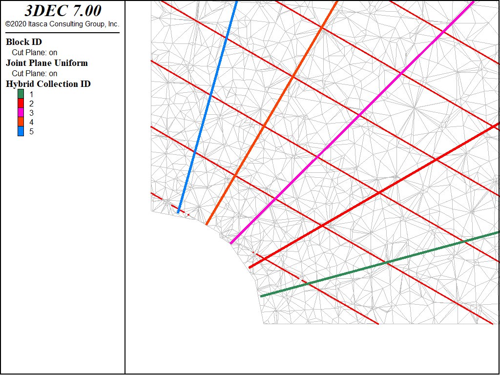
图 21：隧道模型剖面中的节理与锚杆。

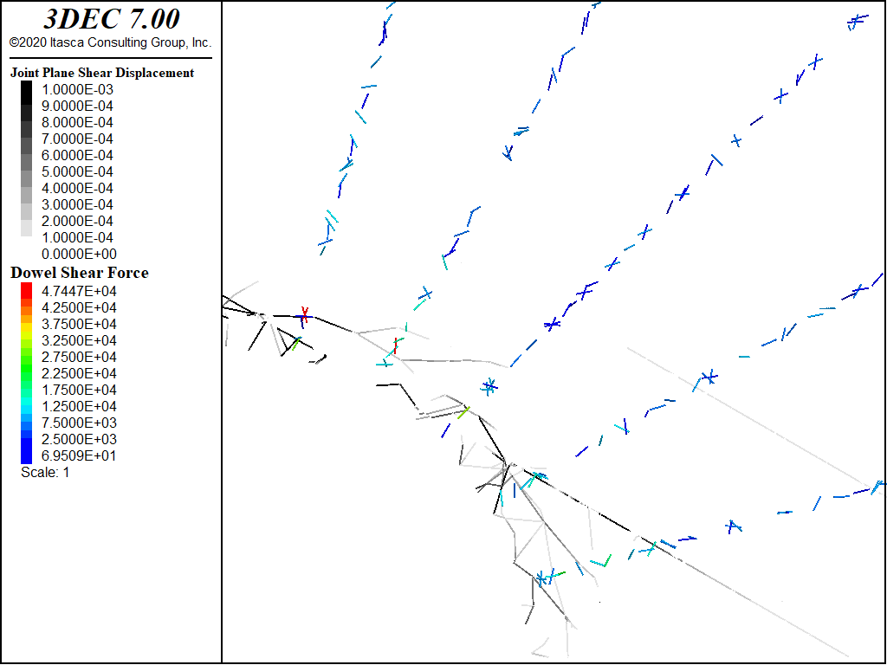
图 22：求解后的节理剪切位移和销钉剪切力。
tunnel.dat
; 采用复合锚杆支护的简单隧道算例
;
model new
model random 10000
block create tunnel length -1 1 blocks-radial 8 blocks-tangential 2 ...
boundary 8 radius-ratio 1.1
;
; 四分之一隧道
block delete range position-x -100 0
block delete range position-z -100 0
;
block zone generate center 0 0 0 edgelength-center 0.1 distance 9 ...
edgelength-distance 0.5
;
; 将网格单元作为块体导出到文件 poly.dat
block zone list poly
=========================================
model new
model random 10000
model large-strain on
;
block tolerance 0.001
;
program call 'poly'
;
; 加入一组节理
block cut joint-set dip 30 dip-direction 90 spacing 0.5 number 20 ...
jointset-id 999
;
block zone generate center 0 0 0 edgelength-center 0.1 distance 9 ...
edgelength-distance 0.5
;
block zone cmodel assign elastic
block zone property density 2600 bulk 1e9 shear 3e8
; 四面体之间的节理
block contact property stiffness-normal 1e11 stiffness-shear 1e11 ...
friction 40.0 cohesion 1e3 tension 1e2
;
; 断层
block contact property stiffness-normal 1e10 stiffness-shear 1e10 ...
friction 40.0 range joint-set 999
; 新接触
block contact material-table default property stiffness-normal 1e10 ...
stiffness-shear 1e10 friction 40.0
;
block gridpoint apply velocity-x 0 range position-x 0
block gridpoint apply velocity-z 0 range position-z 0
block gridpoint apply velocity-x 0 range position-x 9
block gridpoint apply velocity-z 0 range position-z 9
block gridpoint apply velocity-y 0 range position-y -1
block gridpoint apply velocity-y 0 range position-y 1
;
block insitu stress -5e6 -3e6 -3e6 0 0 0
;
model solve
;
model save 'initial'
;model restore 'initial'
;
block group 'rock'
block group 'tunnel' range cylinder end-1 0 -1 0 end-2 0 1 0 radius 1
;
; 识别隧道表面
; 修改面分组以便绘图
block face group 'surface' range group-int 'rock' 'tunnel'
; 修改网格点分组以便施加反力
block gridpoint group 'surface' range group-int 'rock' 'tunnel'
;
block delete range cylinder end-1 0 -1 0 end-2 0 1 0 radius 1
;
model cycle 1
;
fish define bound_his_ini
bound_his_start = global.step
end
[bound_his_ini]
;
; 用于逐步减小反力的函数
fish define bound_his
; 非线性，在约 10000 个计算步内趋近于 0
bound_his = 0.95^((global.step-bound_his_start)/10.0)
end
;
block gridpoint apply reaction fish bound_his range group 'surface'
fish history bound_his
;
model cycle 1000
;
model save 'pre-bolt'
fish define install_cables
tol = 0.01
loop i (1,5)
angle = math.pi*0.5*i/6.0
p1x = math.cos(angle)+tol
p1z = math.sin(angle)+tol
p2x = 4.0*math.cos(angle)
p2z = 4.0*math.sin(angle)
command
sel hybrid create by-line [p1x],0,[p1z] [p2x],0,[p2z] prop 1 seg 20 dowel-len 0.025
end_command
end_loop
end
[install_cables]
;
; 锚索参数
sel hybrid property 1 cross-sectional-area 181e-6 young 98.6e11 ...
yield-tension 5e6 grout-stiffness 1.12e9 grout-cohesion 1.75e9
; 销钉参数
sel hybrid property 1 dowel-stiffness 2e10 dowel-yield 5e5 ...
dowel-strainlimit 0.015
;
model solve ratio 1e-5 or cycles 5000
model save 'hybrid'
;
建模注意事项
材料属性
创建加固或混合锚杆单元（sel reinforcement create、sel hybrid create）时，通过 property 关键字赋予属性编号。所有量必须采用一致单位制，见表 6（Table 6）。注意，对于加固或混合锚杆单元，刚度单位为［力／位移］，强度单位为［力］。
| 属性 | 单位 | SI | 英制 | ||||
|---|---|---|---|---|---|---|---|
| 面积 | 长度2 | m2 | m2 | m2 | cm2 | ft2 | in2 |
| 黏结刚度 | 力／长度／位移 | N/m/m | kN/m/m | MN/m/m | Mdynes/cm/cm | lbf/ft/ft | lbf/in/in |
| 黏结强度 | 力／长度 | N/m | kN/m | MN/m | Mdynes/cm | lbf/ft | lbf/in |
| 密度 | 质量／体积 | kg/m3 | 103 kg/m3 | 106 kg/m3 | 106 g/m3 | lbf/ft2 | psi |
| 弹性模量 | 应力 | Pa | kPa | MPa | bar | lbf/ft2 | psi |
| 刚度 | 力/位移 | N/m | kN/m | MN/m | Mdynes/cm | lbf/ft | lbf/in |
| 屈服强度 | 力 | N | kN | MN | Mdynes | lbf | lbf |
对称条件
位于对称平面上的结构单元，其模量和刚度应采用完整属性值；截面积和屈服强度则应比不在对称面上的相同单元降低 50%。施加于对称面结构单元的荷载，也应比非对称面位置的相同荷载降低 50%。
平衡条件
用户必须判断模型何时达到平衡。涉及结构单元的问题，可通过所有常规准则判断平衡，例如历史、速度场等。
符号约定
所有结构单元的轴力均以受压为正。剪切力的符号约定与网格单元剪应力相反。混合锚杆单元的轴向位移在受压加载时为正；局部加固单元的轴向位移在受拉加载时为正。
参考文献
Bjurstrom, S.《采用灌浆未张拉锚杆加固的硬岩节理抗剪强度》，载于第三届国际岩石力学大会论文集，第 II 卷，B 部分，第 1194-1199 页。华盛顿特区：美国国家科学院（1974）。
Dight, P. M.《露天矿岩壁稳定性的改进》。博士学位论文，莫纳什大学（1982）。
Fuller, P. G., and R. H. T. Cox.《基于节理位移控制的岩石加固设计——新概念》，载于第三届澳大利亚隧道会议论文集（澳大利亚悉尼，1978），第 28-35 页。悉尼：澳大利亚工程师学会（1978）。
Gerdeen, J. C. 等。《采用全树脂灌浆未张拉锚杆加固层状矿山顶板的锚杆支护方案设计准则》，美国矿务局，OFR 46(4)-80（1977）。
Haas, C. J.《岩石锚杆抗剪阻力》，Trans. Soc. Min. Eng. AIME，260(1)，32-41（1976）。
Hyett, A. J., W. F. Bawden and R. D. Reichert.《岩体约束对全长灌浆锚索黏结强度的影响》，Int. J. Rock Mech. Min. Sci. & Geomech. Abstr.，29(5)，503-524（1992）。
Itasca Consulting Group Inc.《UDEC（通用离散元程序）》，5.0 版。明尼阿波利斯：ICG（2011）。
Littlejohn, G. S., and D. A. Bruce.《岩石锚杆——技术现状。第一部分：设计》，Ground Engineering，8(3)，25-32（1975）。
Lorig, L. J.《硬岩中全长黏结被动岩石加固的简单数值表示》，Computers and Geotechnics，1，79-97（1985）。
法国研究小组（Azuar、Debreuille、Habib、Londe、Panet 和 Salembier）。《被动钢筋加固岩体》，载于第四届 ISRM 大会论文集（瑞士蒙特勒，1979 年 9 月），第 1 卷，第 23-30 页。鹿特丹：A. A. Balkema 及瑞士土与岩石力学学会（1979）。
Pells, P. J. N.《全长黏结岩石锚杆的行为》，载于第三届国际岩石力学大会论文集，第 2 卷，第 1212-1217 页（1974）。
St. John, C. M., and D. E. Van Dillen.《岩石锚杆：新的数值表示及其在隧道设计中的应用》，载于《岩石力学——理论、试验与实践》（第 24 届美国岩石力学研讨会论文集，得克萨斯 A&M 大学，1983 年 6 月），第 13-26 页。纽约：Association of Engineering Geologists（1983）。
| 这些内容对您有帮助吗？… | FLAC3D © 2019, Itasca | 原文更新于 2020 年 10 月 8 日 |
| 版权与免责声明 | ||